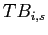
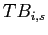
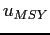
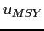

Next: Results Up: Methods Previous: Assessing the knowledge-base for
We do not advocate the use of MSY targets for management, but still
report MSY-related BRPs because they are the most commonly estimated
BRP and can be used to compare multiple stocks. For those assessments
that did not contain MSY reference points, but did include total catch
( ,
,
 ) and total biomass (,
) and total biomass (,
 ) time series data, we used a Schaefer surplus
production model to estimate total biomass and exploitation rate at
MSY (
) time series data, we used a Schaefer surplus
production model to estimate total biomass and exploitation rate at
MSY ( and , respectively). Surplus production
of stock
and , respectively). Surplus production
of stock  in year
in year  ,
,  , is a commonly used measure of
stock productivity, representing the amount of catch that can be taken
while maintaining the biomass at a constant size, and can be
calculated as:
, is a commonly used measure of
stock productivity, representing the amount of catch that can be taken
while maintaining the biomass at a constant size, and can be
calculated as:
| (1) |
We fit a Schaefer surplus-production model, which is based on a logistic model of population growth to the catch and total biomass time series data. The predicted surplus production in each year in the Schaefer model is given by:
 |
(2) |
We estimated the model parameters ( and
and  ) using maximum
likelihood in AD Model Builder admb assuming that the
residuals
) using maximum
likelihood in AD Model Builder admb assuming that the
residuals
 were normally
distributed. For the Schaefer model,
were normally
distributed. For the Schaefer model,  is simply
is simply  , and the
harvest rate that results in maximum sustainable yield, , is
, and the
harvest rate that results in maximum sustainable yield, , is
 . Carrying capacity was constrained to be less than twice the
maximum observed total biomass.
. Carrying capacity was constrained to be less than twice the
maximum observed total biomass.
Statistical analyses and plot generation were conducted with the R Environment for Statistics and Graphics R using the packages RODBC R:RODBC, KernSmooth R:KernSmooth, xtable R:xtable, ape R:ape, gsubfn R:gsubfn, IDPmisc R:IDPmisc, and doBy R:doBy. Figure 1 was generated using the Generic Mapping Tools gmt.
Stock-recruitment database administrator 2010-07-15